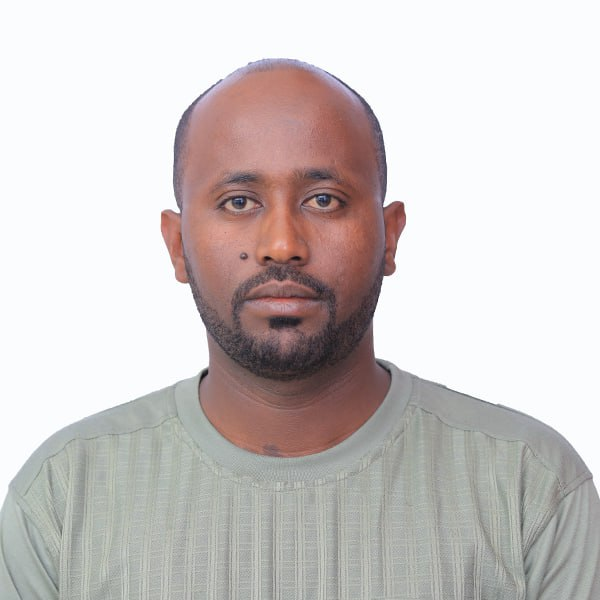

Chera Asefa

Summary
A dedicated and highly qualified Computer
Engineering Lecturer with an M.Sc. and over
six years of experience in teaching, research,
and academic leadership. Possesses strong expert
ise in areas such as Natural Language Processing, Embedded Systems
, and Machine Learning, with a
proven publication record. Seeking to leverage
academic and technical skills in a challenging
role to contribute to innovative projects.
Education
- Master's Degree in Electrical Computer Engineering: 2017-2019
- GPA: 3.82/4.0
- Thesis Result: Very Good
- Institution: Jimma University
- A specific field of study: Computer engineering
- Award: M.Sc. in Electrical Computer Engineering
- Bachelor's Degree in Electrical and Computer Engineering: 2012-2017
- GPA: 3.66/4.0
- Institution: Jimma University
- A specific field of study: Computer engineering
- Award: B.Sc. in Electrical and Computer Engineering
-
CCNA networking: October 2016 - May 2016
- Institution: Jimma University
- A specific field of study: Computer engineering
- Cisco certified network associate
Work Experiance
Lecturer and Chair of Computer Engineering Stream, Jimma Institute of Technology,
Faculty of Electrical and Computer Engineering, Jimma, Ethiopia
March, 2022– Present
I have adequate experience in teaching and researching the issues relating to Computer
Engineering. And also I'm serving as a chair of Computer Engineering Stream. Besides, I have been
delivering different undergraduate courses in Computer Engineering
- Digital Logic Design
- Operating System
- Microprocessor and Interfacing
- Embedded Systems
Assistant Lecturer, Jimma Institute of Technology, Faculty of Electrical and Computer
Engineering, Jimma, Ethiopia August 2018 - March 2022
I have been providing different undergraduate courses in the Faculty of Electrical and Computer
Engineering like:
- Computational Methods
- Computer Programming
ICT Team Leader at Dedo-1 Constituency, National election board of Ethiopia, Jimma Zone
February, 2021 - July, 2021
I have been configuring the network of the constituency and supervising the data encoders and
giving the report to the head quarter during 6th General Election
Research Experiances
Master’s Researcher, Jimma Institute of Technology, Faculty of Electrical and Computer
Engineering, Jimma, Ethiopia
To pursue my master’s degree, I have conducted a research in the area of natural language
processing, specifically in speech recognition system. The research title was “Afaan Oromoo
Speech recognition system using hybrid approach”
B.Sc. Final Year Project, Jimma Institute of Technology, Faculty of Electrical and Computer
Engineering, Jimma, Ethiopia
I have conducted a marvelous final year project. The project title was "Arduino based Automated
Garbage Monitoring System". Besides, the finding of the project is published as well
Publication
Fetulhak Abdurahman, Chera Asefa, Sileshi Aweke “Automated Garbage Monitoring
System Using Arduino” IOSR Journal of Computer Engineering (IOSR-JCE) , Volume 20,
Issue 1, Ver. I (Jan.- Feb. 2018), PP 64-76
Kitaw, B., Asefa, C., & Legese, F. (2024). Leveraging machine learning models for anemia
severity detection among pregnant women following ANC: Ethiopian context. BMC Public
Health, 24, 3500
Skills
- Python Libraries: Tensor Flow, Keras, NumPy, Pandas, Matplotlib
- Programming: Python, JAVA, C++,MATLAB and PACKET TRACER
- Computer skills: Latex, MS-office, MS-excel, and MS publisher
- Interpersonal: Adaptability, Critical thinking, Problem-solving, Effective
communication, Strong work ethics
Volunteering
- Lecturing Youth on Programming Language at Jimma American Corner
- Serving as a leader of elders at my local church
- Participated as facilitator in National Volunteer Community Development service
Program
Languages
- Afaan Oromoo - Native
- Amharic – Fluent
- English – Fluent
Achievements and Certificates
- Cisco Certified Network Associate (CCNA) Routing and Switching from Cisco Academy
- Certificate of Completion of Introduction to Cyber security by Cisco Academy
- Certificate of Completion in Leadership and Management
- Certificate of Completion in Introduction to Digital Marketing
- Certificate of of Appreciation for developing Jimma Smart City roadmap
Referees
- Eng. Kris Calpotura, Academic Staff, Associate Professor at Faculty of Electrical and
Computer Engineering, Jimma Institute of Technology. Contact Address:krisccalpoturaph@gmail.com
- Mr. Birhanu Belete - Dean of Faculty of Electrical and Computer Engineering, Jimma
Institute of Technology.
Contact Address: birhanu.belete@ju.edu.et